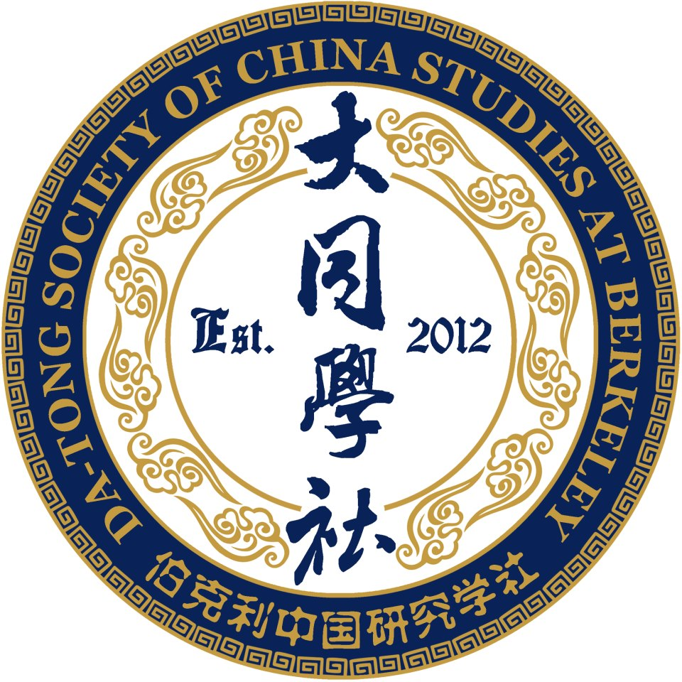

本学期 · Fall 2026
阅读、研究、公共交流。
共同阅读，分享进行中的研究，探索中国与东亚的不同路径。工作坊主题依参与者兴趣而定。
工作坊 →公共活动 → 课程与 DeCal →保持联系
加入对话。
通过邮件接收活动通知与学社动态。

本学期 · Fall 2026
共同阅读，分享进行中的研究，探索中国与东亚的不同路径。工作坊主题依参与者兴趣而定。
工作坊 →公共活动 → 课程与 DeCal →保持联系
通过邮件接收活动通知与学社动态。
我们的学生主导 DeCal 课程 镜头之下：转型中的二十世纪中国于 2026 年秋季开设，课程编号为 Hist 198。

工作坊汇聚学生与研究者，持续开展关于中国与东亚的跨学科探讨。主题围绕参与者的兴趣展开。
以文本为基础，讨论历史、文化研究、政治经济学与社会科学领域的经典文献及当代研究。
同伴报告研究，分享进行中的工作，交流定性与定量方法。
讨论纪要将陆续在此发布。
参加工作坊加州大学伯克利分校大同学社 ，由学生自主运营的学术社群，汇聚关于中国与东亚的多元视角。
我们欢迎不同学科的本科生、研究生与研究者，涵盖历史、文化研究、政治经济学及实证社会科学（定性与定量研究）。

我们重视高密度思想交流，在开放、协作的氛围中进行。
无论专攻中国研究，还是以社会科学方法探讨东亚议题，大同都提供批判性探究与跨学科学习的空间。
讲座、放映、对谈及其他公共活动——连接学社与学者、作家、艺术家、公众。
点击图片浏览相册，使用分类按钮筛选活动。
加州大学伯克利分校 Anthropology & Art Practice Building · 160 教室
纪录片讲述空海从日本赴唐求学的旅程，放映后与导演岳野在线对谈。活动由大同学社、C. V. Starr East Asian Library 与 Deep Value 联合举办。文言文旁白、英文字幕；片长 97 分钟。
查看活动海报获取活动通知，请 订阅邮件或加入活动群.
档案收录了自 2012 年以来的公共项目及其他学社活动。

从 2020 年微信禁令谈起，律师朱可亮先生深入拆解华人社群诉总统行政令的起源、历程与法律策略，并反思第一修正案在数字时代的边界。讲座后 Q&A 持续到深夜。


与淑明女子大学博物馆联合办展——近代中国刺绣枕顶首次公开展出。配套展品清单、志愿者排班、借展协议与讲座海报均由大同学社独立执行，是社团史上规模最大的对外活动。


贾樟柯获威尼斯金狮奖影片。2015 年首映后由东亚系学者做评论导读；2023 年春季应社友要求加映一次。


聚焦山西大同前市长耿彦波的城市改造纪录片。2021 年秋季邀请导演周浩线上对谈，配套双语海报、活动流程与新闻稿均由本社撰写。


海外作家严歌苓女士最新长篇《米拉蒂》中文版首次在湾区亮相。讲座后由作者亲笔签售，社友近距离对话。


由东亚系主任 Andrew F. Jones 教授赞助、1 学分官方选修课。从 2020 年《A History and Many Stories》到 2022 年《A History of Unfinished Tales》，持续多学年，是社团对外学术输出的代表项目。


社友们在 Berkeley 校园地标前穿着学士袍的纪念合影。这张主要照片是 Hearst Memorial Mining Building 台阶前 11 人合影；其余包括 Sather Tower、Doe Library 等场景的合影。


中国政治思想史、《蒋公的面子》电影回顾、社团招新、期末合影。


走进斯坦福胡佛研究所，近距离观看民国时期与现代中国的珍贵档案原件。


15 位同学围绕"什么是好的社科研究"展开 90 分钟讲读与提问，奠定大同学社小型沙龙的传统。


Marina 与 Santa Rosa 春秋两次 Retreat、Doe Library 图书馆小组、Senior Fellow 毕业论文展示（Amy Loo, Monica Liu）。


欢迎学生、研究者与感兴趣的社群成员参与大同。你可以了解我们的 工作坊 与 公共活动，或参与筹办未来的活动。工作坊名额与地点请提前联系我们确认。
主要联系人：Green Wang， greenw@berkeley.edu
使用企业微信扫码加入 Datong 2026Fall 活动群，获取活动通知并参与交流。二维码在 10 月 17 日前有效；之后请返回本页查看更新。
登记邮箱，接收大同学社的活动通知与最新消息。
订阅邮件 · Mailing List大同学社是加州大学伯克利分校注册学生组织。官方登记、章程及成员名单请见 CalLink →